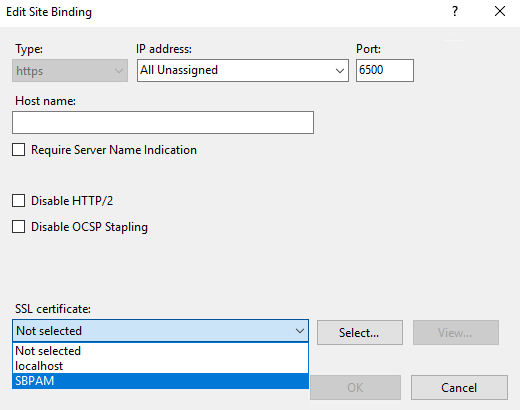
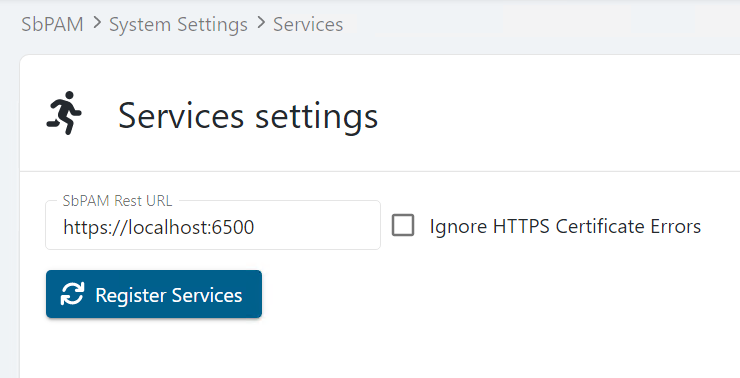

Overview
This article outlines the process of installing a valid certificate to the SbPAM IIS website.Requirements
- The certificate should be for Client and Server Authentication and be from a trusted Certificate Authority (CA).
- The certificate needs to be in the Trusted Root on the SbPAM server (with the private key), and in the Trusted Root on all clients accessing the SbPAM website (without the private key).
-
For High Availability (HA) deployments the certificate should have both server FQDN names in either Common Name (CN) or Subject Alternative Name (SAN) fields.
Instructions
After receiving the certificate from a CA, the bindings for the SbPAM website need to be updated in Internet Information Services (IIS) Manager on the SbPAM server.
- Open the IIS Manager on the SbPAM server.
- In the left sidebar, navigate to the SbPAM Web Service website, right-click, and click Edit Bindings...
- Double-click https.
- Select the SSL certificate for the DNS hostname of your SbPAM server (the DNS name used as the Subject Alternative Name (SAN) in the cert).

After making these changes, restart the SbPAM website by running the "iisreset" command in an elevated Command Prompt.
Updating Service Configuration Files (SbPAM 3.6 or later)
SbPAM service configuration files will need to be updated to use the same DNS name as the certificate. These updates can be triggered via the SbPAM UI. Navigate to the "System Settings" menu, and the "Services" node.
Enter the FQDN that matches the name of your cert (e.g. "https://yourcert.company.com:6500"). Leave Ignore HTTPS Certificate Errors unchecked.
Click the Register Services button. A "Services registered" pop-up will appear when the necessary changes have been made.
Updating Service Configuration Files (SbPAM 3.5 or earlier)
SbPAM service configuration files will need to be updated to use the same DNS name as the certificate. The following files will need to be edited:
C:\ProgramData\Stealthbits\PAM\ActionService\appsettings.user.json
C:\ProgramData\Stealthbits\PAM\EmailService\appsettings.user.json
C:\ProgramData\Stealthbits\PAM\ProxyService\appsettings.user.json
C:\ProgramData\Stealthbits\PAM\SchedulerService\appsettings.user.json
C:\ProgramData\Stealthbits\PAM\SIEMService\appsettings.user.json
In each file, locate the "Url" key and change its value so it matches the DNS name used in the certificate. In the following example, "localhost" should be changed to match the aforementioned DNS name (leaving the port specification unchanged):
"Url":"https://localhost:6500"
After updating each config file, verify SbPAM services are running properly by navigating to the Service Nodes page in the SbPAM Web UI. The services should be all green:
If any services are red, Register Services by selecting your username in the top-right of the SbPAM UI, click Settings, then click Register Services.